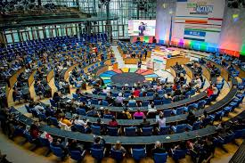
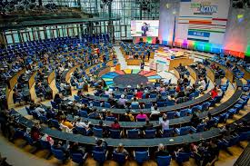

Galeri
Pembangunan Berkelanjutan
 

✨Sustainable Development Goals✨
Sustainable Development Goals (SDGs) atau Pembangunan Berkelanjutan, sebuah agenda global yang disepakati oleh 193 negara anggota PBB pada tahun 2015.
SDGs memiliki tujuan untuk mengakhiri kemiskinan, mengurangi kesenjangan, melindungi planet, serta memastikan kesejahteraan bagi semua orang hingga tahun 2030. Agenda ini terdiri dari 17 tujuan dengan 169 target yang mencakup isu sosial, ekonomi, dan lingkungan, dan berlaku untuk semua negara.
- SDGs 1 - Tanpa Kemiskinan (No Poverty)
- SDGs 2 - Tanpa Kelaparan (Zero Hunger)
- SDGs 3 - Kehidupan Sehat dan Sejahtera (Good Health and Well Being)
- SDGs 4 - Pendidikan Berkualitas (Quality Education)
- SDGs 5 - Kesetaraan Gender (Gender Equality)
- SDGs 6 - Air Bersih dan Sanitasi Layak (Clean Water & Sanitation)
- SDGs 7 - Energi Bersih dan Terjangkau (Clean Energy)
- SDGs 8 - Pekerjaan Layak dan Pertumbuhan Ekonomi (Economic Growth)
- SDGs 9 - Industri, Inovasi dan Infrastruktur (Industry, Innovation, Infrastructure)
- SDGs 10 - Berkurangnya Kesenjangan (Reduced Inequalities)
- SDGs 11- Kota dan Permukiman yang Berkelanjutan (Sustainable Cities)
- SDGs 12 - Konsumsi dan Produksi yang Bertanggung Jawab (Responsible Consumption)
- SDGs 13 - Penanganan Perubahan Iklim (Climate Action)
- SDGs 14 - Ekosistem Lautan (Life Below Water)
- SDGs 15 - Ekosistem Daratan (Life on Land)
- SDGs 16 - Perdamaian, Keadilan dan Kelembagaan yang Tangguh (Peace, Justice, & Strong Institution)
- SDGs 17 - Kemitraan untuk Mencapai Tujuan (Partnership for the Goal)